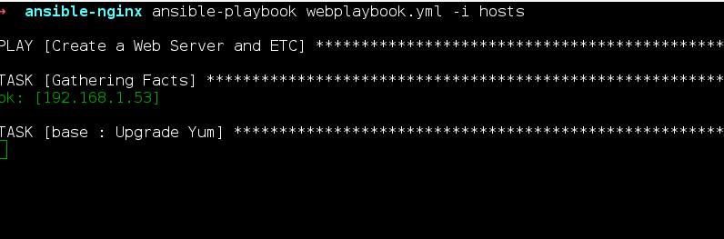

Ansible ile Nginx Kurulum ve Yapılandırılması vol.1
Written on

Ansible ile Nginx Kurulum ve Yapılandırılması
Ansible Nedir?
Ansible deployment işlerinizi otomatikleştirebileceğiniz bir betik dilidir. (?) Arkaplanında Python kullanmaktadır. ( Yanlış biliyor olabilirim )
Bütün olayı otomatikleştirmek mi yani ? Evet bütün işi otomatikleştirmek. Şimdi düşünüp aklınızdan lan bu kadar şey yazacağıma el ile yaparım daha hızlı hallederim diye düşünebilirsiniz. Fakat işler proje büyüdüğünde ve bu işlemi hergün yaptığınızda pekte öyle olmamaktadır.
Ayrıca bu yazdığınız Ansible Role'lerini her projenizde ufak değişiklikler ile birlikte kullanabilirsiniz.
Nginx Nedir?
Şuan dünya üzerinde bulunan Top 10 ( En Fazla Girilen 10 Site ) Sitelerin %50'sine yakını bu Web Sunucusunu kullanmaktadır. Yavaş yavaş Apache'nin tahtını ele geçirmekte hatta geçirmiştir bile.
Tatava yapma olaya geç
Hadi Başlayalım
Ansible Skeleton Oluşturma
Ben burada yapacağım işlemleri kategorize ederek bir çok dosya ile çalışmaktayım.
Örnek vermek gerekirse Nginx kurulumu ayrı bir Role EPEL reposunun eklenmesi için ayrı bir role yazmaktayım. Bahsetmeden olmaz test sunucumda Centos kullanmaktayım.
İskelet yapımız aşağıda ki gibidir.
- Roles ( İşlemleri yaptıracağımız kural dosyaları )
- Base
- Tasks ( Görevler )
- Nginx
- Handlers ( Türkçeye çeviremedim )
- Tasks ( Görevler )
- Templates ( İçerisinde variable kullanacağımız konfigürasyon dosyaları )
- Web
- Tasks ( Görevler )
- Base
-
Vars ( İçerisine değişkenleri tanımlayacağımız klasör )
-
ansible.cfg (Ansible Konfigürasyonu )
- hosts ( Bağlantı Sağlayacağımız Hostlar)
- site.yml ( Ana Ansible Dosyamız )
- webplaybook.yml ( Sadece websunucusu için yazılmış olan playbook )
Site.yml olarak neden ayırdım? Çünkü büyüyen projelerde bütün görevleri bu dosyaya yazmak pek efektif değil. Daha sonra ekleyeceğimiz roller için ayrı playbookları include etmek daha kolay.
Daha sonra ki makalelerimde zaten bu dosyaların üzerinde geliştirmeler yapacağız.
Şimdi hosts dosyamızı oluşturduk içerisine bağlanacağımız sunucuları yazalım.
[web]
192.168.1.53 ansible_connection=ssh ansible_ssh_user=root ansible_ssh_pass=369874125
[database]
192.168.1.53 ansible_ssh_user=root ansible_ssh_pass=369874125 #Database'i sonra kullanacağız
Burada açıklanacak çok fazla birşey yok sanırım. Siz buraya istediğiniz kadar ip ekleyebilirsiniz. Ansible bu yazdığınız tüm IP'leri gezerek kurulumları sağlayacaktır.
Site.yml Dosyamızı Oluşturalım
---
- include dbplaybook.yml
- include webplaybook.yml
İki tane ansible dosyamı include ettim. DBPlaybook'una daha sonra bakacağız.
Webplaybook.yml Dosyamızı oluşturalım
---
- name: Create a Web Server and ETC
hosts: web
become: yes
become_user: root
remote_user: root
vars_files:
- vars/main.yml
roles:
- base
- web
- nginx
Burada name olarak istediğinizi yazabilirsiniz sadece bu görevi tanımlamak amacı ile yazılmıştır.
Hosts: Bu kısımda hosts dosyamızdan hangi IP adresine bağlanacağını belirttik.
Become_user ve remote_user: Sunucuya hangi user ile bağlanacağımızı belirttik.( Yanlışım olabilir belirtirseniz sevinirim )
vars_files: Burada rolelerin içinde kullanacağımız değişkenleri belirten dosya yolunu belirttik.
Roles: Bu kısımda ise bu playbook'un hangi rolleri kapsadığını belirttik.
Role'leri hazırlamak
Base Role
---
- name: Upgrade Yum
yum: update_cache=yes name=* state=latest
tags: packages
- name: Install Software
yum: update_cache=yes name={{ item }} state=latest
with_items:
- htop
- fail2ban
- openssl
Burada her bağlandığımız sunucuda yapmamız gerekenleri belirttik. Bunlar nedir ?
Yum package manager'ı update etmek. Daha sonra ise döngüye soktuğumuz itemları sırası ile kurdurmak. with_items içerisinde belirtilen tüm itemlar yum komutuna gönderilerek kurulumu sağlanmaktadır.
Nginx Role
---
- name: Nginx Installing on RPM Repo
yum: name=http://nginx.org/packages/centos/7/noarch/RPMS/nginx-release-centos-7-0.el7.ngx.noarch.rpm
- name: Install Nginx
yum: name=nginx state=latest
- name: Create Nginx Conf Folders
file: path=/etc/nginx/{{ item }} state=directory owner= {{ nginx_user }} group={{ nginx_user }} mode=755
with_items:
- sites-avaliable
- sites-enable
- name: Copy Nginx Configuration
template: src=nginxconf.j2 dest=/etc/nginx/conf.d/nginx.conf
- name: Firewall Rules
command: firewall-cmd --permanent --zone=public --add-service={{ item }}
with_items:
- http
- https
notify:
- restart firewall
- restart nginx
Burada ilk önce Nginx RPM dosyasını yum reposuna tanıtıyoruz. Daha sonra ise Nginx'i kuruyoruz.
Bir sonra ki kısım yabancı gelebilir burada file ile bir klasörün oluşturulacağını belirtip bu klasörün yetkilerini vermekteyiz. ( Tabi ki döngüye sokarak 2 klasör oluşturuyoruz kim tek tek yazar ki ? )
Bir sonra ki kısımda ise template diye bir tag görmekteyiz. Bu tag src'de belirttiğimiz dosyanın içerisini gezerek bu dosyayı renderlar. Yani işin özü içerisinde belirtilmiş olan değişkenleri bu dosyaya yazarak karşıda ki sunucuya atar.
Kalan kısımlarda command ile direk olarak shell'e komutu bir döngü sayesinde basmaktayız. Notify kısmı ise bizim handlers kısmında ismini verdiğimiz görevleri yerine getirir.
Handlers dosyasına bir göz atalım.
---
- name: restart firewall
service: name=firewalld state=restarted
- name: restart nginx
service: name=nginx state=restarted
Burada name olarak verdiğimiz isimleri Role içerisinde handlers'a yazmaktayız.
Templates dosyamıza bakalım.
server {
listen 80 {{ project_domain }};
listen [::]:80 {{ project_domain }};
server_name _;
root /usr/share/nginx/html;
# Load configuration files for the default server block.
include /etc/nginx/default.d/*.conf;
location / {
}
error_page 404 /404.html;
location = /40x.html {
}
error_page 500 502 503 504 /50x.html;
location = /50x.html {
}
}
Gördüğünüz gibi burada project_domain şeklinde bir değişkenimiz bulunuyor işte burada ansible bu değişkeni /vars/main.yml dosyasında aramaktadır.
Web Role
Burayı aslında kalabalık gözüksün diye yaptım. Daha sonra geliştireceğiz hazır da dursun.
Çok birşey yaptığımız yok sadece yeni komutlar bulunmakta asıl amaç o yani.
---
- name: Add Group for Nginx
group: name={{ nginx_group }} state=present
- name : Add User for Nginx
user: name={{ nginx_user }}
Burada nginx için kullanıcı ve grup eklemekteyiz.
Vars Dosyamız
---
# Nginx
project_domain: 0x656e.com
nginx_group: webapps
nginx_user: project
Değişkenlerimizi tanımladık.
Hadi gazlayalım.
Run Forest Run
Ansible çalıştırmak için ansible-playbook komutunu girip playbooklarımızı argüman olarak bu komuta göndermeliyiz.
Komutumuzu yazalım.
ansible-playbook webplaybook.yml -i hosts
Vol 2 de bu dosyaların üstüne bir çok şey ekleyerek devam edeceğiz. Şuan yapılan çalışmanın kodlarına erişmek isterseniz.